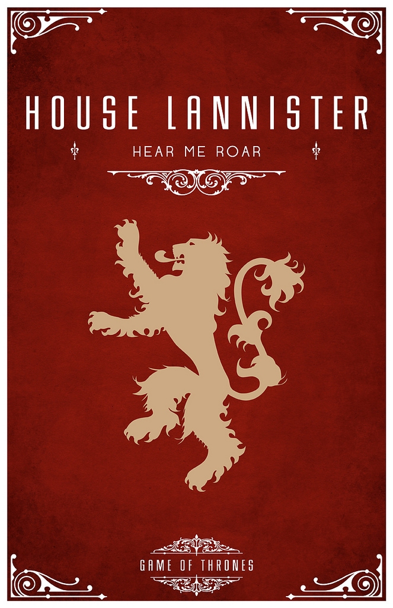
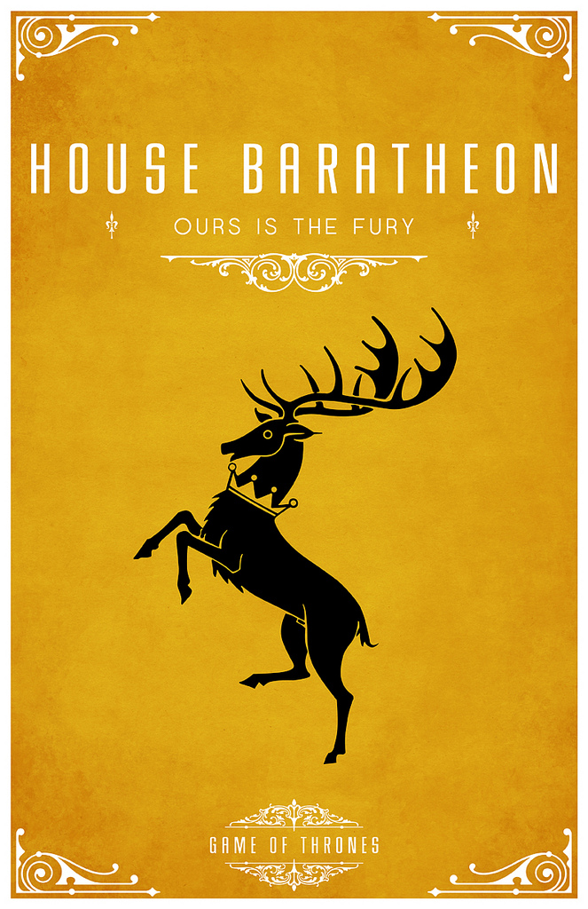
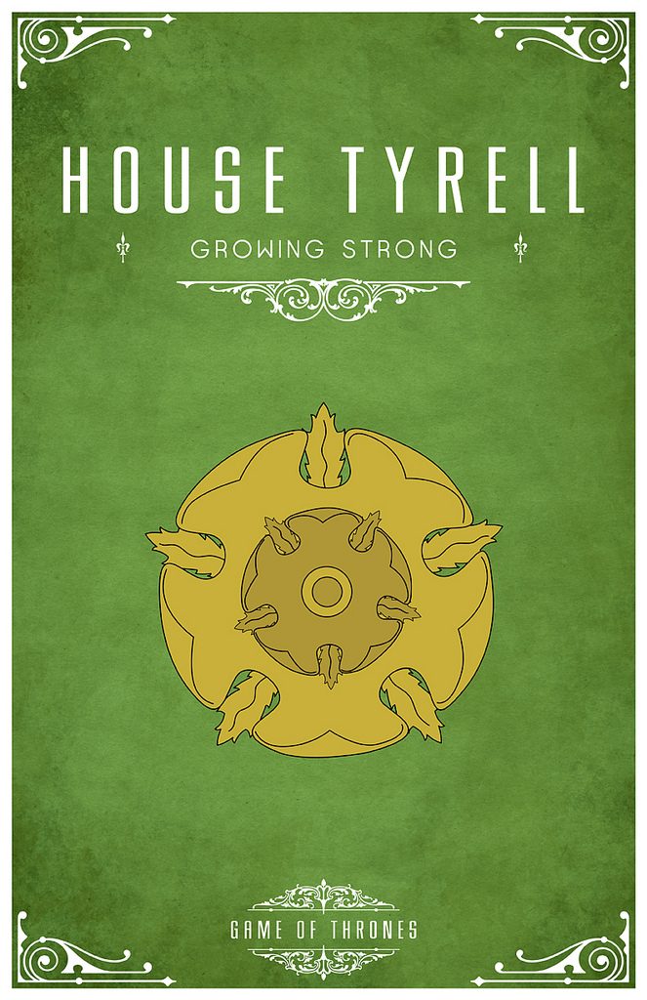
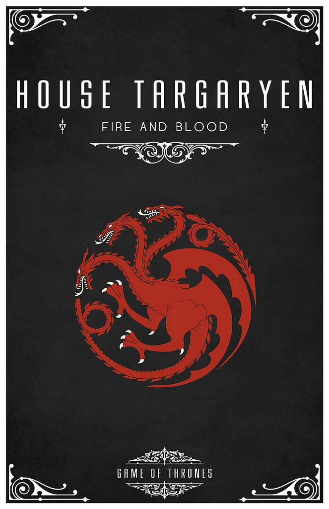
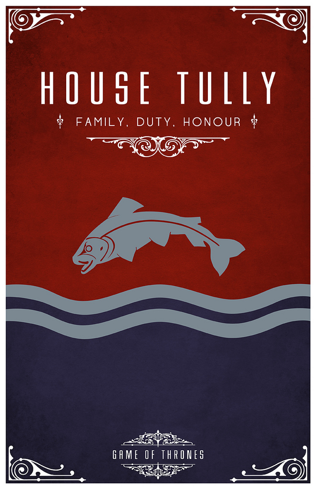
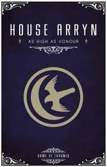
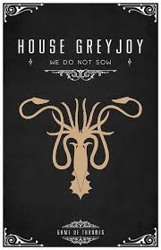
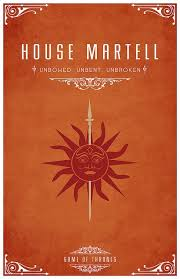

House Lannister is one of the other houses of the Seven Kingdoms. It is the prominent house in the Westerlands. They are seated at Casterly Rock. The Lannister's hold the title of Warden of the West by tradition. The current Lord is Tywin Lannister. His children are Cersei, Jamie, and Tyrion. They are one of the top shadiest house of Game of Thrones, maybe even the most shadiest. They will do anything to keep their skeletons in the closest. When I say anything, I mean anything. Even if they have to kill innocent people. They are cunning and manipulative.

House Baratheon is the priciple house in the Stormlands. They are seated at Storm's End. Steffon Baratheon was the Lord of Storm's End. He died at see, leaving his sons, Robert, Stannis, and Renly Baratheon parentless. There is a lot of bad blood between the brothers. After Robert overthrows the Mad King Aerys Targaryen, he was named King, leaving the seat of Storm's End to Renly and Dragonstone to Stannis. This is where there demise begins, now leaving House Baratheon pretty much extinct.

House Tyrell is the main house in the Reach. Their seat is Highgarden They hold the title Warden of the South and Lord Paramount. They are a very wealthy house, like House Lannister. They also have strongest armies. But there's one little problem. House Tyrell is extinct. Lannister's play a little in that. But that's none of my business.

House Targaryen is of Valyrian descent. They are the only dragonlords that survived the Doom of Valyria. This house used to rule the Seven Kingdoms of Westeros. They also used to hold the seat Dragonstone. Their reign ended when Robert over threw Aerys, leaving them in exile.

House Tully is the main house in the Riverlands. They are seated at Riverrun. Lord Hoster Tully is the Lord Paramount of the Trident. His offspring are Catelyn, Lysa, and Edmure. When he dies, Edmure will become the Lord of Riverun. Too bad he's held captive. Lysa is somewhat off her rockers and is killed and her sister Catelyn is killed at the Red Wedding. But we're saving that for another shady house. Like Baratheon and Targaryen. They are pretty weak, as you can see here.

House Arryn is the principle house in the Vale of Arryn. The are seated at The Eyrie is the summer and Gates of the Moon in the Winter. The main lord was Robert Arryn, until he was killed for finding out a Lannister secret.

House Greyjoy is the ruling house in the Iron Islands. They are seated in Pyke. The current lord is Euron Greyjoy. His heir is is only living son, Theon Greyjoy. During Greyjoy's Rebellion, the Starks took him as a captive. He grew up at Winterfell, becoming a ward and Robb Stark's advisor when Ned Stark goes to Kin'g Landing to become Hand of the King. Theon betrays the Starks to show his father he is loyal to House Greyjoy, being that he has been away for so long. And all because he wants his title. Depressing and shady, huh?

House Martell is the ruling house in Dorne. Their seat is Old Palace in Sunspear. They're pretty much extinct. Guess who did it? Lannisters.
